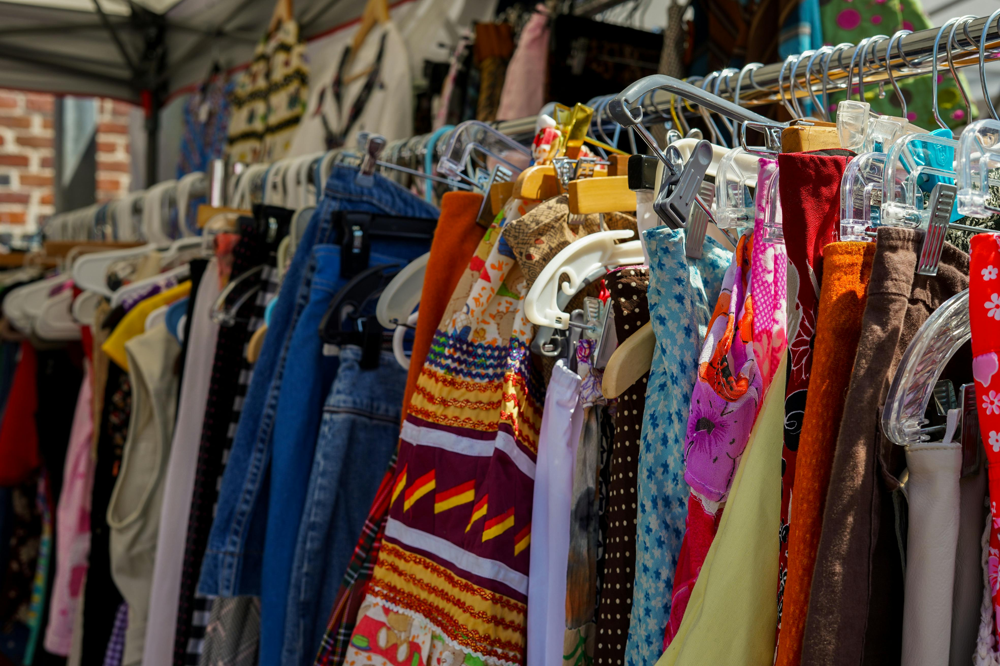
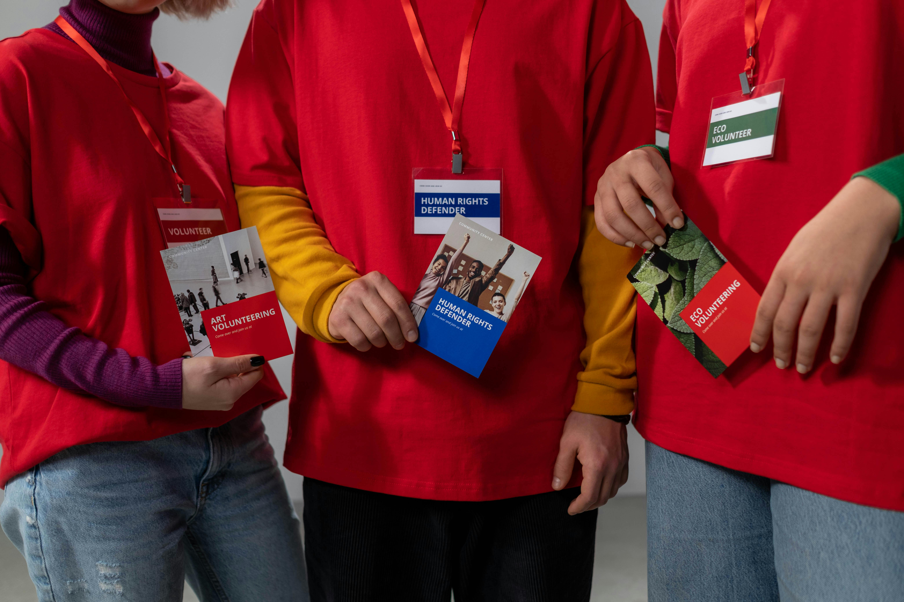
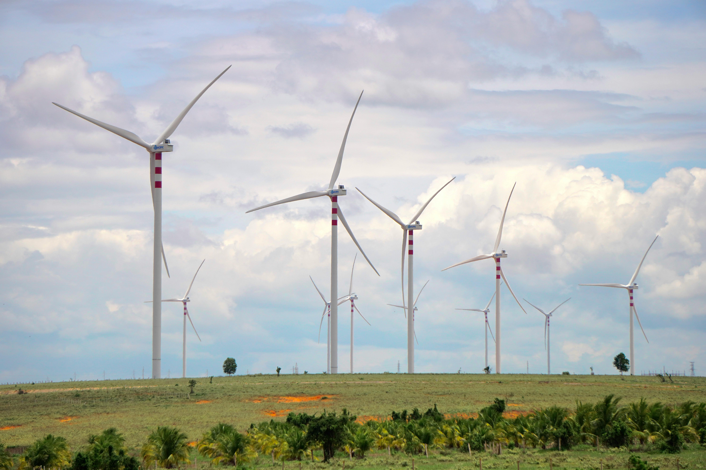

Reduce Food Waste
Plan meals, use leftovers, and compost scraps to dramatically cut household food waste.
Impact points: 3Responsible Tomorrow SDG 12: Responsible consumption and productiont
Select the actions you already take — or could start taking — and discover your personal impact on responsible consumption.
Click the cards below to select your actions. Your impact score will update automatically.
Plan meals, use leftovers, and compost scraps to dramatically cut household food waste.
Impact points: 3Swap one car journey per week for a bus or train to reduce your carbon footprint.
Impact points: 2
Choose pre-owned clothes, electronics, and furniture to extend product lifespans and cut demand for new manufacturing.
Impact points: 4
Give time to a local SDG-aligned initiative such as a repair café, community garden, or food bank.
Impact points: 4
Turn off unused devices, switch to LED bulbs, and reduce heating where possible to lower your energy use.
Impact points: 3Encourage others by sharing one actionable tip about responsible consumption on social media each week.
Impact points: 1